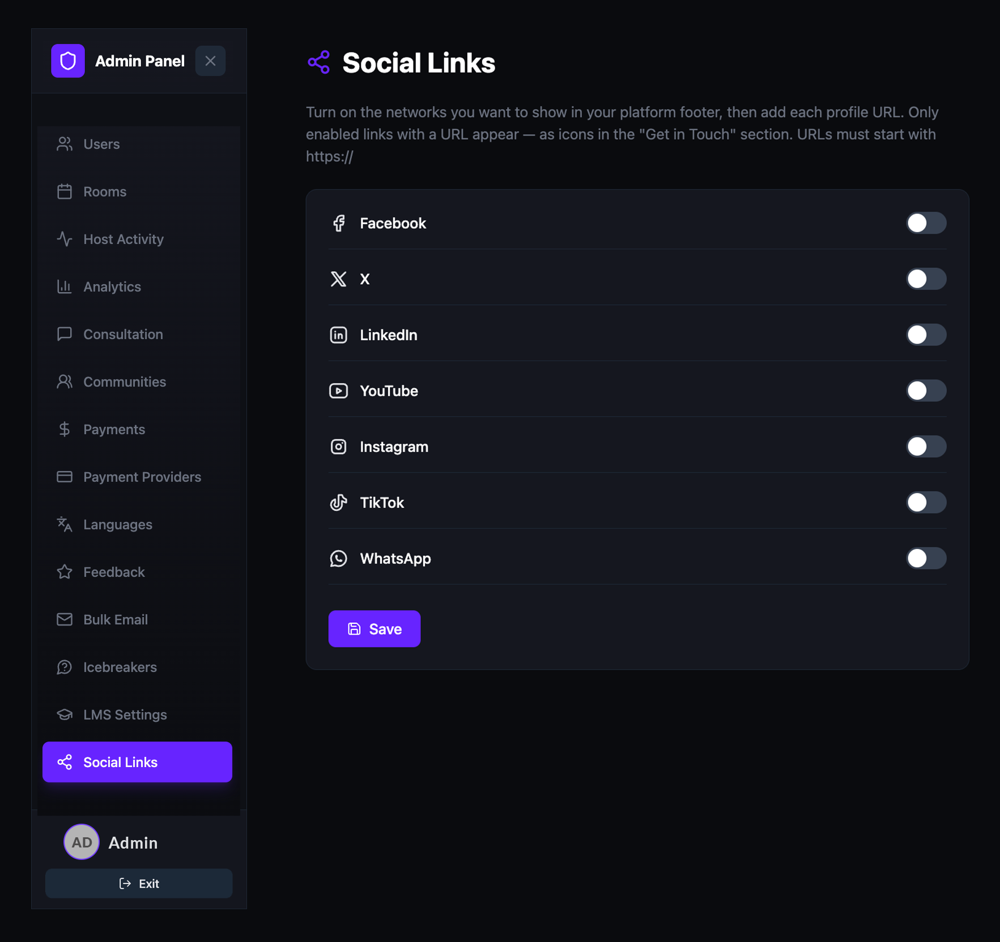
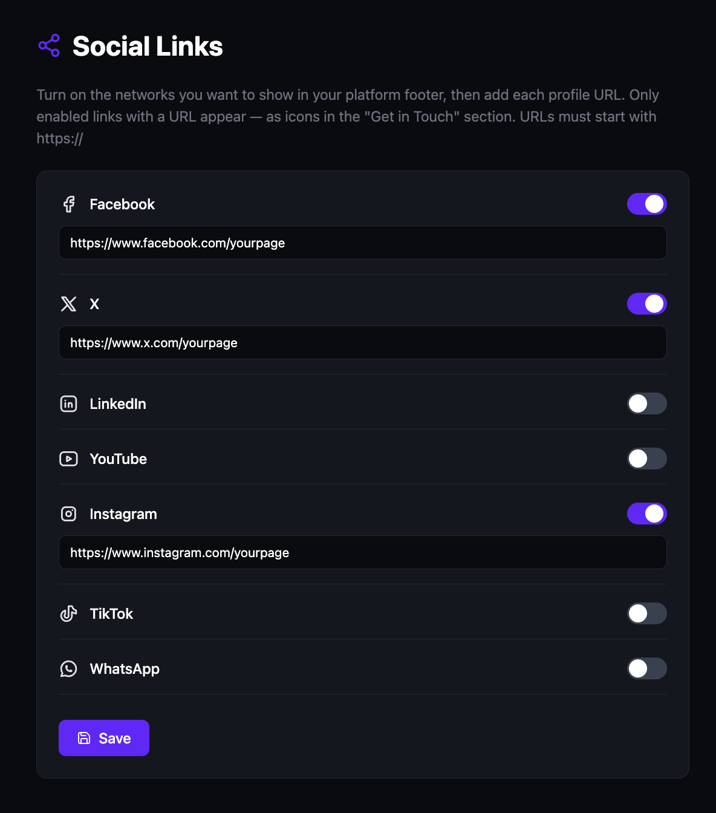

Manage social links
Add your organization's social media profiles to the platform footer. Enable the networks you use, enter each profile URL, and the platform displays them as icons in the "Get in Touch" section visible to all visitors.
Open the Social Links page
- Open the Admin Panel.
- Click Social Links in the left sidebar.
The Social Links page lists seven supported networks, each with a toggle and a URL field. All networks are disabled by default.

Enable a social network and add your URL
- Find the network you want to enable: Facebook, X, LinkedIn, YouTube, Instagram, TikTok, or WhatsApp.
- Toggle the switch on. A URL input field appears below the network name.
- Enter your full profile URL (e.g.
https://www.facebook.com/yourpage). - Repeat for any additional networks you want to display.
- Click Save.

Please note: URLs must start with
https://. Only enabled networks with a valid URL appear as icons in the platform footer.
Disable a social network
- Toggle the switch off next to the network you want to remove.
- Click Save.
The network icon is removed from the platform footer immediately after saving. Your URL is preserved so you can re-enable it later without re-entering it.